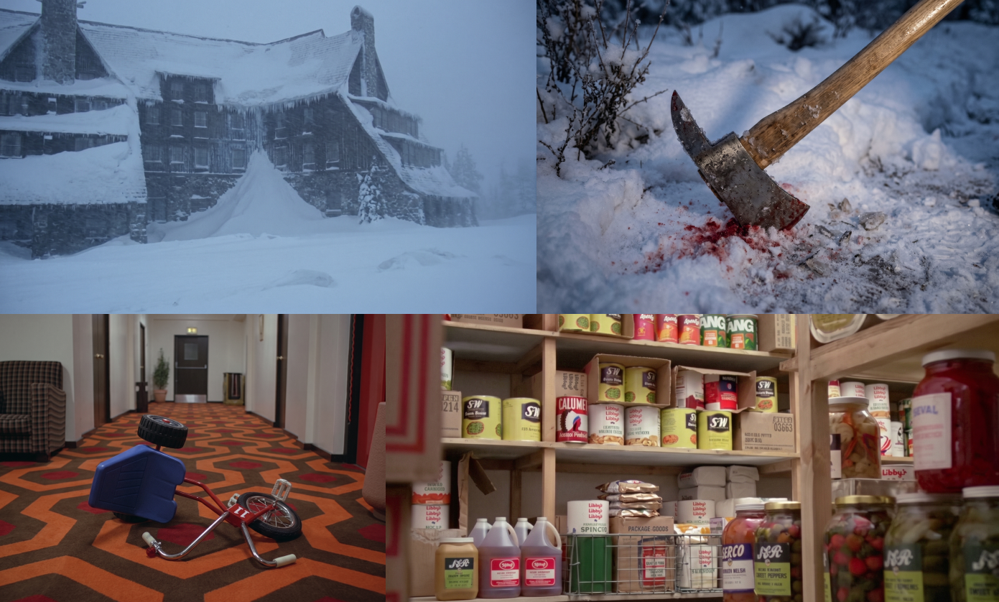

Title Sequence Refresh for The Shining
Summary Of Project
A refresh of The Shining’s title sequence for a younger audience: three minutes cut down to thirty seconds, foreshadowing the film with generated frames while keeping the dread.
Contents
Project Specifications
-
Subject: The Shining.
-
Length: 3 minutes cut to 30 seconds.
-
Audience: a younger, modern demographic.
-
Tools: Premiere Pro and generated imagery.
The Task
We were given the task of refreshing a title sequence, or coming up with a new one, for a show or movie. As it was Halloween at the time, I decided to do The Shining.
While it does fill you with dread and anxiety, I feel it runs a bit too long and isn’t made for a modern audience. My goal was to remake The Shining’s title sequence for a younger demographic, while still keeping that sense of dread and fear.
Researching The Shining
I started by rewatching the movie, which, if you haven’t seen it, I highly recommend. I picked up a few things while watching. There is a lot of hidden symbolism in the movie, specifically the Native American imagery. If you didn’t know, the hotel the movie is set in was built on an Indian burial ground. The maze acts as a psychological trap and a loss of control, which is what happens to Jack.
What I found interesting was that Jack moved to Colorado, lived there for a month, and then decided to kill his entire family. At the time of writing this I’ve lived in Colorado for 3 months, so when will I snap?
Developing the Title Sequence
Before I show what I’ve done, I feel I should remind you what the intro sequence for The Shining is, so please enjoy these next 3 minutes!
Now that you’ve watched it, what do you think? Too long? A bit boring? Filled you with dread? Did the aerial shots scare you? That’s okay, that is how everyone I showed it to felt, and we agreed that it should be shorter and have some excitement.
So I thought of some ideas to do just that, and decided to cut it down to 30 seconds, as 3 minutes is far too long. I also wanted to foreshadow what happens in the movie, and a great way of doing this was to generate images from frames of the movie. Below is a collage of all the frames that were generated for the project:

I then went on to Premiere Pro and got to work editing and creating a title sequence that would fill you with dread whilst also keeping your attention.
The Title Sequence
Reflection
We’ll see.